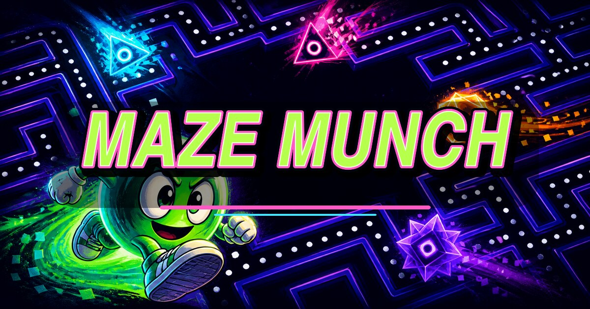

SCORE0
LEVEL1
VITE3
PRONTO
Scorri sul labirinto oppure usa le frecce. Raccogli tutti i punti e attiva i surge nodes.
RETROWEBGAMES • MAZE CHASE

🏆 HIGH SCORES
BEST 0
TORNA AL MENU
Verticale • touch / swipe • tastiera